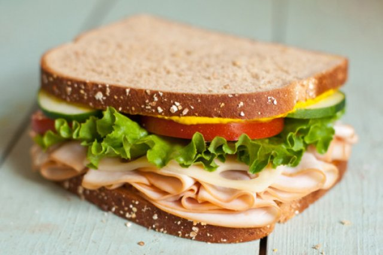

Sandwich de jamón

Descripción
A continuacion se mostrará la receta de cómo hacer un sandwich
de jamón. Esta es una receta muy sencilla que sirve para saciar
el hambre de manera rápida con ingredientes que se pueden
encontrar en cualquier refrigerador.
Esta receta me salvó en mis años de estudiante cuando necesitaba
comer pero no tenía atún.
Ingredientes
- Pan de barra
- Jamón de pavo
- Queso panela
- Mayonesa real
- Mostaza
- Medio tomate
- Aguacate al gusto
Instrucciones
- Coloca los panes a fuego lento hasta que queden tostados.
- Unta la mayonesa en cada pan.
- Unta la mostaza en cada pan.
- Coloca el jamón sobre un pan.
- Corta el queso panela en rodajas y colocalo sobre el jamón.
- Corta el tomate y el aguacate en rodajas y colocalos
en el pan
- Cierra los panes. Disfruta.